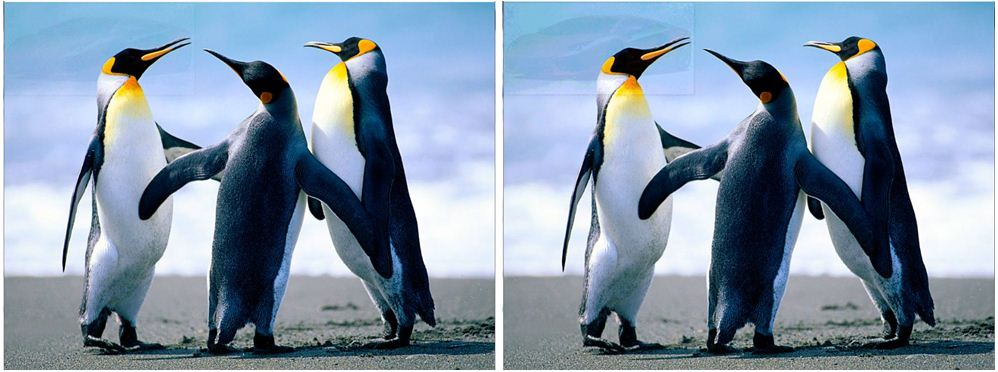
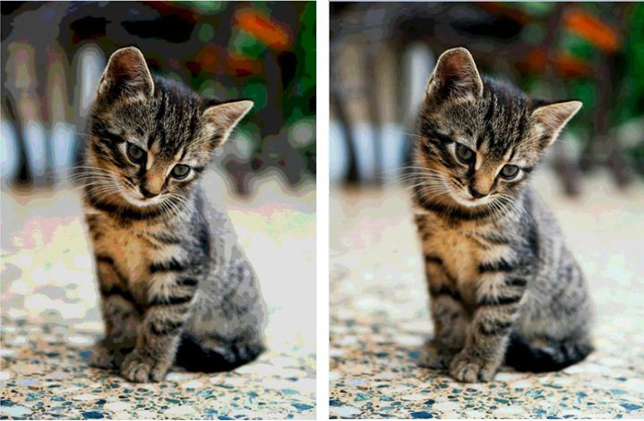

Rachel Shafer
Steganography
Team Project
Backend by Rachel Shafer
UI by Natalie Shafer
Language: Java
Project Description
Introduction
Steganography is the practice of hiding secret data in plain sight
in other non-secret data like a file, text, or image. This application
encodes a secret text or a secret image in a image and can decode a secret message or a secret
image from the non-secret image or in other words the cover image.
Below is the opening page of the application that provides the options to encode or decode a
secret message or a secret image from the cover image.

Hidden Text in an Image
In order to encode text into an image, the image,
text message, and message length is converted into byte arrays. The first 32 bytes of the
image is reserved for storing the length of the message. Then the binary value of the length
as well as the message is separated into individual bits and each bit replaces the least significant
bit in the corresponding byte of the image. The text can then be decoded from the image by reversing
the previous steps stated.
The picture below shows the text encoding window, where the image on the left is the cover image before
the text is added and the image on the right is the cover image after the text is hidden in it. Below
both pictures is a text box for the hidden text to be entered.

The picture below shows the text decoding window, where the image shown is the image that contains the
hidden text. Below the pictures is a text box that displays the message that was hidden in the image.

Hidden Image in an Image
For the image encoding portion of this project, an image is hidden
in another image that is required to be larger in width and height. In order to encode an image into another image, the individual color values
of each pixel are accessed and converted into binary values. The first row of pixels in the larger
cover image are used to hide the height and width of the hidden image, the encoding method (3 or 4 bit),
and a flag that shows there is something hidden in the image. In the 3 bit encoding method the top 3 most
significant bits in each of the hidden image pixel components replace the lower significant bits in the
corresponding cover image pixel components. The 4 bit encoding method is the same but the top 4 most
significant bits of the hidden image replace the lower significant bits in the corresponding cover image
pixel components. Then when a hidden image is decoded from another image, the hidden bits in the cover image
are taken and used to recreate the hidden image.
The picture below shows the image encoding window, where the image on the left is the secret image, the
image in the center in the cover image before the secret image is added and the image on the right is the
cover image after the secret image is added. This example uses the 4 bit method of encoding.

The picture below shows the image decoding window, where the image on the left is the image with the
secret image hidden in it and the image on the right is the secret image that was decoded from the
image on the left.

Although the two encoding methods are very similar, there are slight advantages and disadvantages of each.
In the 3 bit method the hidden image will be hidden better than in the 4 bit method, but the quality of the
hidden image after being decoded from the cover image will be worst in the 3 bit method as compared to the
4 bit method.
Below are two cover images. The image on the left has a image hidden in it using the
the 3 bit method and the one on the right has a image hidden in it using the 4 bit method.
As you can see the image is hidden better using the 3 bit method. However if the cover image
used has a more random design or it is similar in design and color to the hidden image,
it will hide the image better. This can be seen in the previous image where the cat image is
hidden in the forest image.

Below are two images that were hidden in another image. The image on the left was hidden using the
3 bit method and the one on the right was hidden using the 4 bit method. As you can see the quality
of the image on the right is better than the one on the left.

Team Project
Backend by Rachel Shafer
UI by Natalie Shafer
Language: Java